Before: playing without JF+
Prizes say JF+ is needed, the Prizes card offers See JF+, and the JF+ page is the $5 a week pitch.
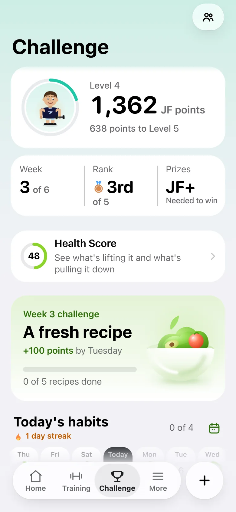
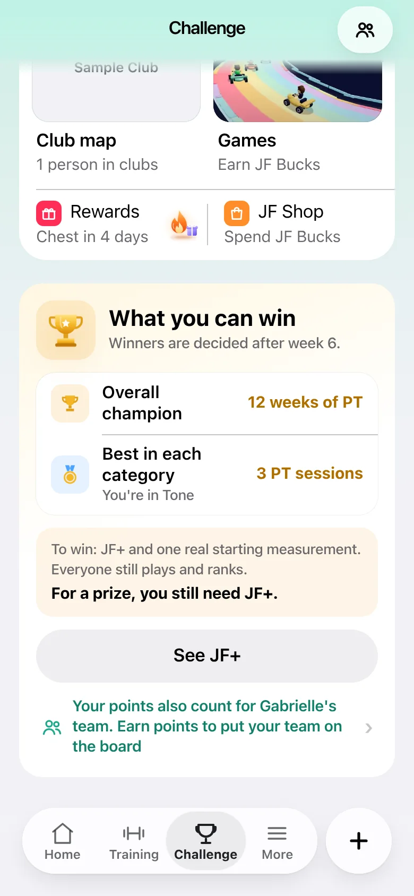
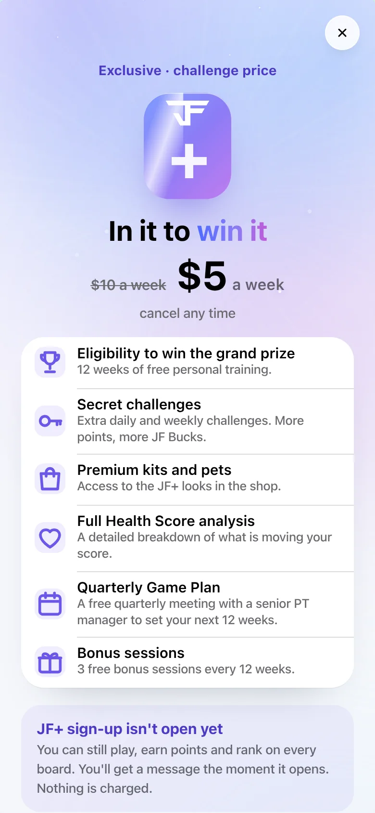
The moment it's on: "You're on JF+"
Shows once, on Home or the Challenge tab, the next time they open the app. Staff switch-on, a payment while the app was closed, or someone already on JF+ who never saw it: all the same.
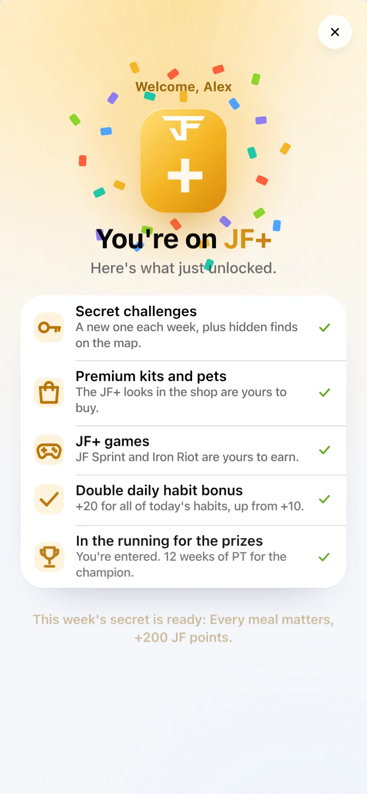
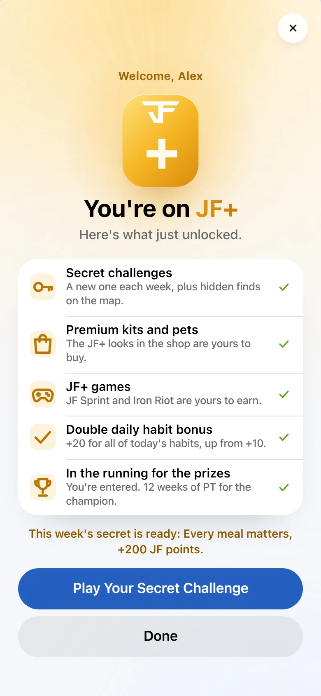
Straight into the secret challenge
"Play Your Secret Challenge" opens this week's secret ready to log. No JF+ wall, the +200 JF points are live.
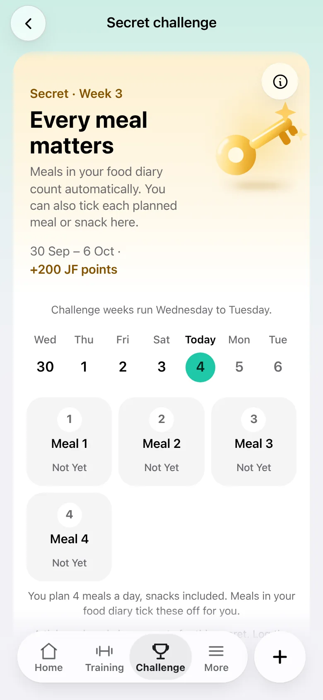
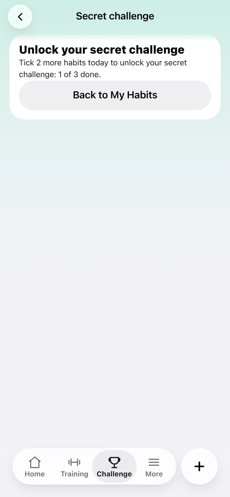
After: the gold JF+ stays
A gold wordmark beside their level and their name. Text only: no pill, no badge, no dot. Prizes now say they're entered.
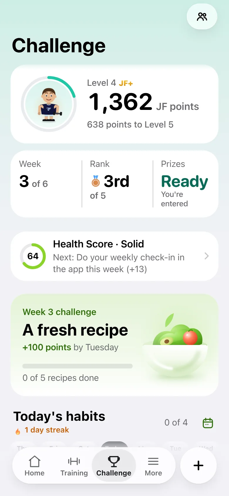
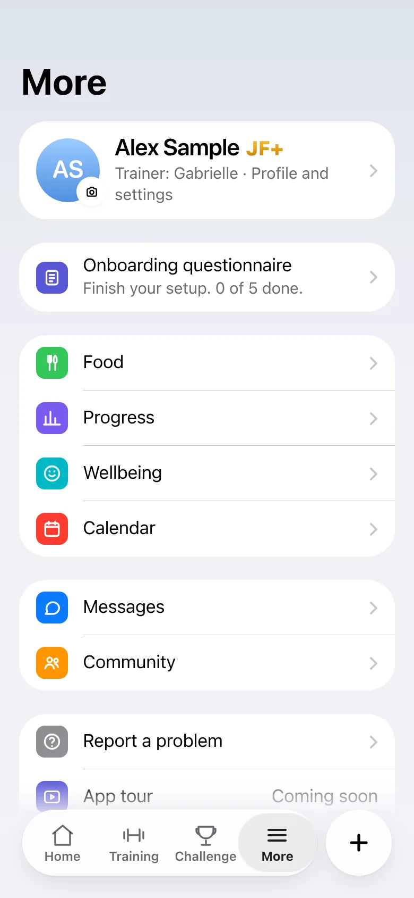
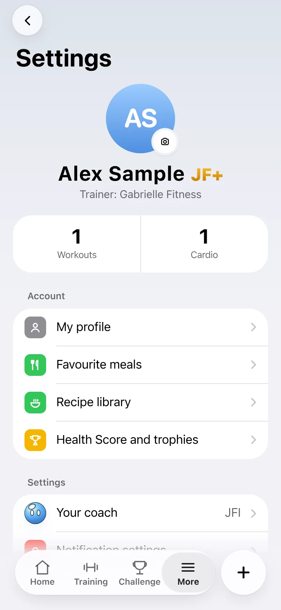
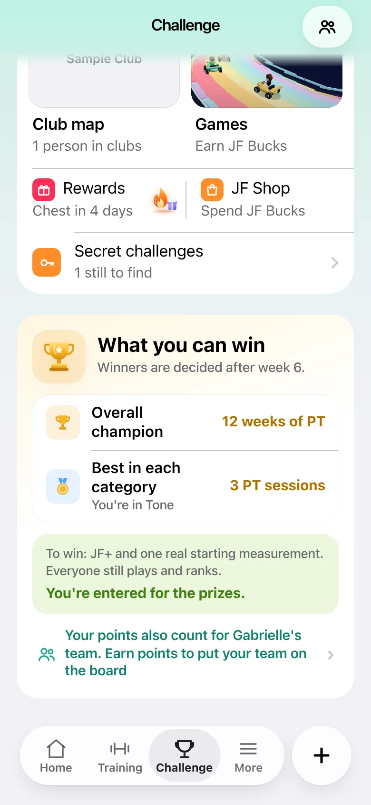
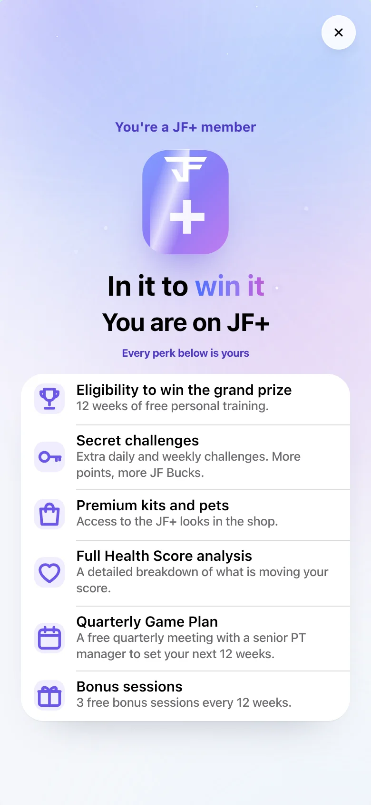
At night too
Dark Mode keeps the gold and drops the light rays.
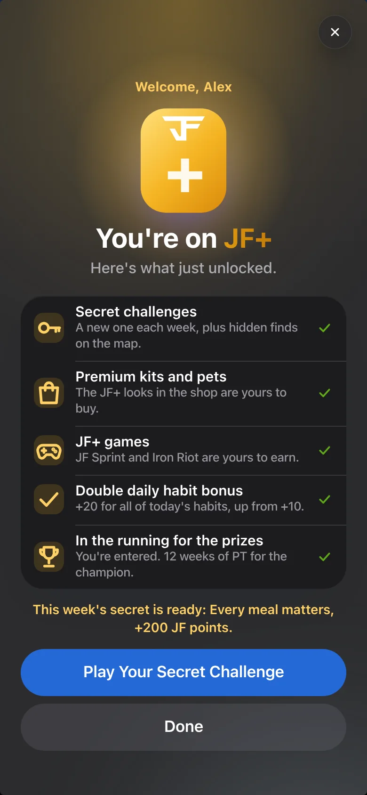
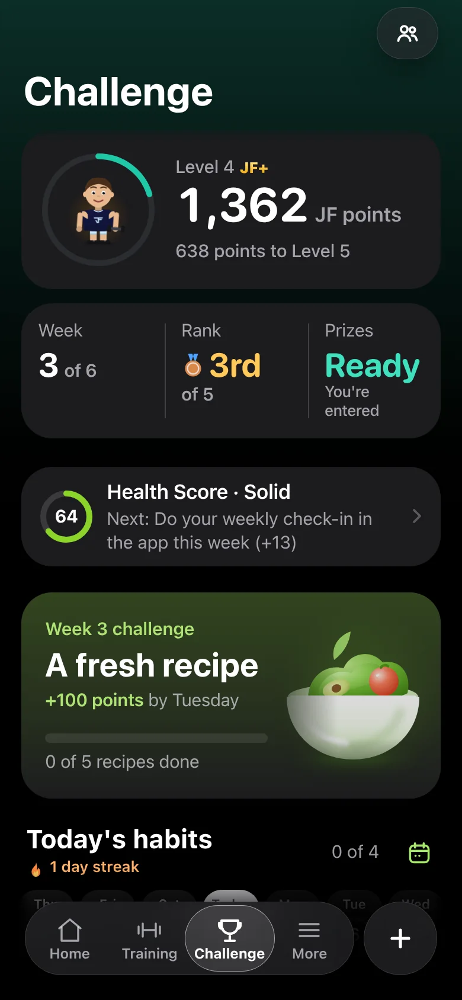
Once, on every phone
Marked the moment it shows, on the device and on the server's one-time notice ledger (jfplus-welcome-v1), so a second phone never shows it again.
Never in the way
- Never in trainer preview, for staff or the demo account.
- Never over the setup, tour, streak, chest or any other pop-up.
- The prizes pop-up and Pick Your Path wait for it, and it waits for them.
Where the button goes
- This week's secret, ready to log.
- Else a map find that was waiting on JF+.
- Else the secret's own screen with the habits left.
- Else the Challenge tab.